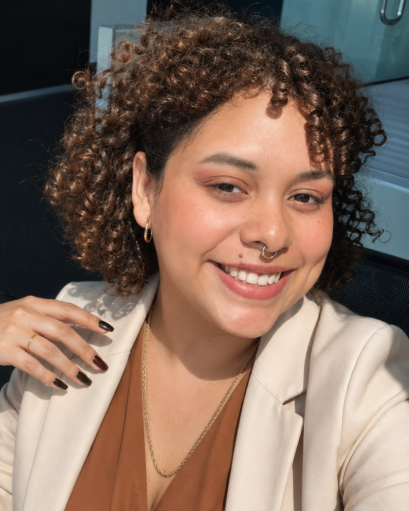

“
No siempre necesitas más consultas.
Primero necesitas aprovechar mejor las que ya llegan. Allí suele estar el crecimiento más rápido, rentable y sostenible.
Ayudo a empresas de servicios a responder más rápido, dar mejor seguimiento y convertir más conversaciones en clientes mediante estrategia, inteligencia artificial y automatización.

Muchas empresas reciben consultas todos los días. Sin embargo, una respuesta tardía, un seguimiento inconsistente o un proceso desordenado puede convertir una oportunidad real en una venta perdida.
Primero necesitas aprovechar mejor las que ya llegan. Allí suele estar el crecimiento más rápido, rentable y sostenible.
No se trata de agregar herramientas por agregar. Se trata de diseñar una experiencia más rápida para el cliente y una operación más clara para tu equipo.
Reduce el tiempo entre la consulta y la primera respuesta, incluso cuando tu equipo está ocupado.
Centraliza conversaciones, próximos pasos y responsables para que ninguna consulta quede olvidada.
Implementa seguimiento oportuno y mensajes que ayudan al cliente a avanzar hacia una cita o compra.
Vuelve a contactar a quienes mostraron interés, pero no compraron en su primera conversación.
Libera tiempo del equipo sin perder el toque humano en los momentos que realmente importan.
Obtén visibilidad sobre respuesta, seguimiento y conversión para tomar mejores decisiones.
Cada empresa tiene una operación distinta. Por eso, la solución comienza con tu proceso real, no con una herramienta de moda.
Reviso cómo llegan las consultas, quién responde, qué información se registra y qué sucede después.
Identifico los puntos donde se pierde tiempo, seguimiento, información o intención de compra.
Defino un proceso simple con mensajes, responsables, automatizaciones y próximos pasos claros.
Ponemos el sistema en marcha, medimos el comportamiento y refinamos lo necesario para que funcione en la práctica.
Trabajo en la intersección entre crecimiento, marketing, procesos comerciales e inteligencia artificial. Mi enfoque es convertir ideas y herramientas en sistemas concretos que el equipo realmente pueda usar.
No vendo tecnología por venderla. Analizo el negocio, encuentro la fricción y construyo una forma más inteligente de responder, acompañar y convertir oportunidades.
Cuéntame cómo recibe y atiende consultas tu empresa. Te ayudaré a identificar los puntos críticos y las primeras mejoras que pueden generar impacto.
Comenzar diagnóstico gratuito